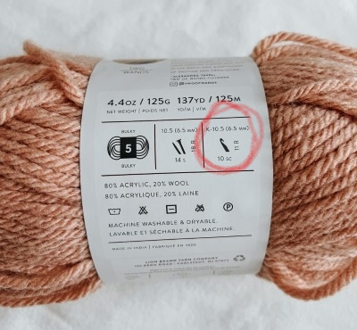

WHAT TO BUY
"AHHHH!!! What the HECK do I buy?!?! The Wallmart yarn isle is SO SCARY!"
Fear not, dear viewer, for this section is an
ALL-IN-ONE PURCHASE GUIDE!!!
From yarn to hooks to weird stuff nobody ever uses, you've got a guide to it all RIGHT HERE!
The first thing you want to do is brainstorm an idea for something to make. Pick something not too complicated, like
an animal or cup cozy. My very first project was a tiny jellyfish. Save the sweaters and blankets for later, when you know your stuff.
Once you pick out a pattern or YouTube tutorial (lucky for you, there's a page
right here for that), it's now time to choose your yarn. Look for something that catches your eye. For a beginner,
I recommend something not too dark, not too thin, and not fluffy. Cotton or polyester should be your goal. If you are making an animal, you could
buy buttons, needles, and thread to sew for the eyes. If you want to buy those plastic safety eyes, thats good too. It's all about personal preference. Don't
forget to buy a pack of
stitch markers for later use. They are a common tool in
almost every crochet pattern. DON'T BUY ANYTHING YOU DON'T NEED!
"But website, this ______ looks so cool! My credit card is calling me....."
NO!!! For now, avoid emptying your wallet and only buy
essential tools.
Now it's time to pick out a hook. Look at the label on your ball of yarn and find the hook symbol. There are some different types of hooks you can choose from, like
metal, plastic, wood, and ergonomic.
In this specific picture, inside the red circle, you can see the reccommended hook size is 6.5mm.
